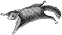

Ce site a été entièrement réalisé à l’aide de logiciels libres.
Qu’est-ce qu’un logiciel libre ?
L’expression « Logiciel libre » fait référence à la liberté pour les utilisateurs d’exécuter, de copier, de distribuer, d’étudier, de modifier et d’améliorer le logiciel.
 GNU et Free Software Foundation : http://www.gnu.org
GNU et Free Software Foundation : http://www.gnu.org
 Association Francophone des Utilisateurs de Linux et des Logiciels Libres : http://www.aful.org
Association Francophone des Utilisateurs de Linux et des Logiciels Libres : http://www.aful.org
 Pourquoi les logiciels ne devraient pas avoir de propriétaires par Richard M. Stallman
Pourquoi les logiciels ne devraient pas avoir de propriétaires par Richard M. Stallman
 Un livret à diffuser largement : Livret du libre
Un livret à diffuser largement : Livret du libre
Conception graphique
Toutes les photos ont été prises avec un reflex numérique et retouchées avec le Gimp. C’est l’équivalent de Photoshop avec les avantages d’un logiciel libre.
 Site officiel du Gimp : http://www.gimp.org/
Site officiel du Gimp : http://www.gimp.org/
 Site officiel en français : http://www.gimp-fr.org/
Site officiel en français : http://www.gimp-fr.org/
 Pour débuter avec le Gimp :
http://www.aljacom.com/ gimp/
Pour débuter avec le Gimp :
http://www.aljacom.com/ gimp/
 Articles plus avancés en français :
http://yeccoe.free.fr/rubrique.php3 ?id_rubrique=6
Articles plus avancés en français :
http://yeccoe.free.fr/rubrique.php3 ?id_rubrique=6
Développement

aufildumonde.net est entièrement développé avec SPIP (Système de publication pour l’Internet). En bref, SPIP permet de mettre en page vos articles sans avoir à taper de HTML depuis n’importe quel point d’accès Internet avec un simple navigateur web : exactement ce qu’il nous fallait pendant notre voyage pour réaliser un carnet de route.
 Site officiel de SPIP : http://www.spip.net
Site officiel de SPIP : http://www.spip.net
 Communauté des développeurs SPIP :
http://www.spip-contrib.net
Communauté des développeurs SPIP :
http://www.spip-contrib.net
Afin de créer les "squelettes" SPIP du site, il faut maîtriser HTML et CSS.
 Didacticiel HTML : http://www.w3schools.com/html/default.asp
Didacticiel HTML : http://www.w3schools.com/html/default.asp
 Didacticiel CSS : http://www.w3schools.com/css/default.asp
Didacticiel CSS : http://www.w3schools.com/css/default.asp
Certains parties plus spécifiques du site ont été directement codées en PHP :
 Site officiel de PHP : http://www.php.net
Site officiel de PHP : http://www.php.net
 PHP France : http://www.phpfrance.com/
PHP France : http://www.phpfrance.com/
Contenu
 rédigé par Eve-Laure (ni logicielle, ni libre !)
rédigé par Eve-Laure (ni logicielle, ni libre !)
 stocké dans une base de données libre MySQL : www.mysql.com
stocké dans une base de données libre MySQL : www.mysql.com